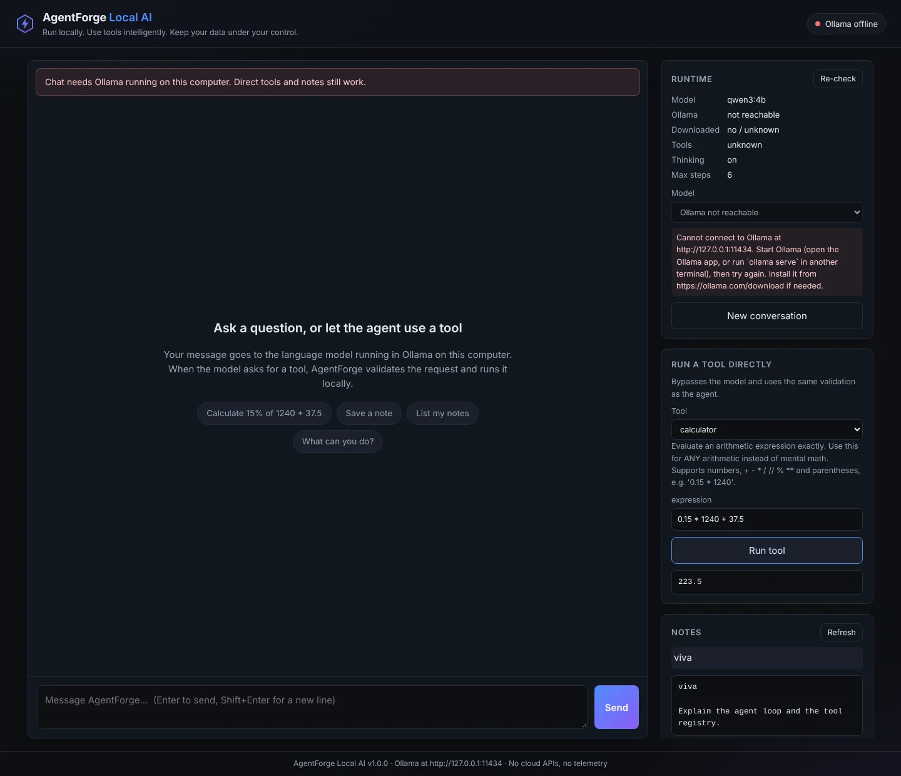
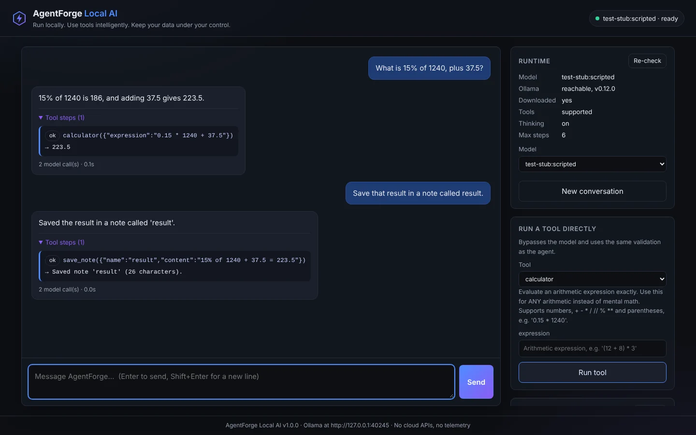
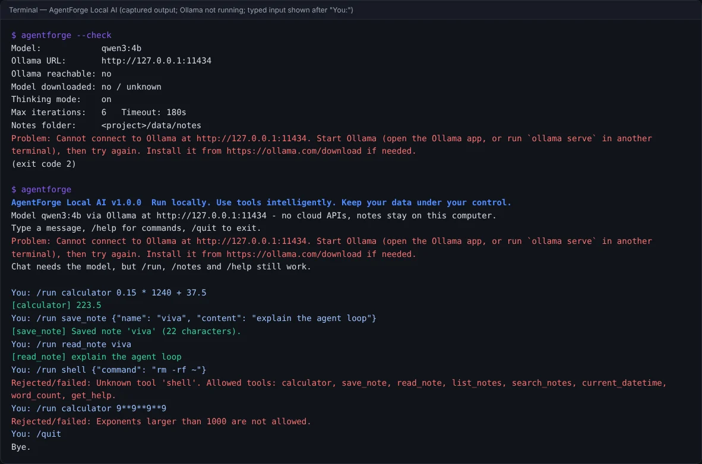

Open-source course project · Python · Ollama
AgentForge Local AI
A Privacy Focused Offline AI Agent Powered by Small Language Models
Run locally. Use tools intelligently. Keep your data under your control.
Note: AgentForge is a Python application you install and run on your own computer with Ollama. This website is a static project page — the agent does not run in your browser, and this page sends nothing anywhere.

What it is
AgentForge Local AI runs a small language model (default qwen3:4b) on your own computer through Ollama.
The model decides whether a tool is needed; AgentForge validates the request and executes a
deterministic Python tool — calculator, notes, date/time, word count or help — then lets the model write the final answer.
No API keys, no paid services, no telemetry, and no cloud fallback. It comes with a terminal interface and a local web interface.
Features
Everything listed here is implemented in the repository and covered by automated tests.
Local inference
Talks to Ollama at
127.0.0.1:11434.--checkreports server version, model availability, and tool/thinking support. Choose among locally downloaded models in the web UI.Bounded agent loop
Model call → validated tool calls → observations → answer. Limits on iterations (6), tool calls per step (4), repeated calls, and input/output size.
Deterministic tools
calculator(syntax-tree based, nevereval),save_note,read_note,list_notes,search_notes,current_datetime,word_count,get_help. No code or shell tool exists.Validation first
Unknown tools are rejected; argument names, types and lengths are checked before anything runs. Errors go back to the model as text so it can correct itself.
Safe local notes
Plain-text files in
data/notes/with safe names (no path traversal), never silently overwritten, with clear errors for disk or permission problems.Two interfaces
Terminal chat with
/run,/notes,/statusand more, plus a local web UI with tool-step traces, runtime status, a direct tool panel and notes.Helpful failures
Ollama stopped, model missing, no tool support, timeouts and malformed replies each give a specific message with a fix. Tools keep working without the model.
Tested without a model
222 automated tests: unit tests with a scripted model, integration tests against a stub Ollama server, a socket-level offline check, and browser tests of the web UI.
How it works
- Receive your request (empty or over-long input is rejected).
- Ask the model with the conversation and the JSON schemas of the 8 tools.
- Decide: no tool call means this is the final answer.
- Validate each proposed call against the allow-list; exact repeats are not re-run.
- Execute the deterministic Python tool and return the result to the model.
- Stop at the final answer, after 6 model calls, or when the model keeps repeating itself.
The model only proposes; AgentForge decides what actually runs.
llm.py talks to the model.Screenshots
Captured from the running application on 28 October 2026. No real language model was available while these were taken, so each caption says exactly what is shown.

test-stub:scripted), not a real language model; the tool results were
computed by AgentForge's real tools.
You:).Install and run
Needs Python 3.10+, Git and Ollama 0.9.0+. The internet is needed once, to install and download the model (about 2.5 GB); after that AgentForge works offline.
1 · Install (macOS / Linux)
git clone https://github.com/SaqibAhmadBhat/agentforge-local-ai.git
cd agentforge-local-ai
ollama pull qwen3:4b
python3 -m venv .venv
.venv/bin/pip install -e ".[dev]"2 · Run (start Ollama first)
.venv/bin/python -m agentforge --check # is everything ready?
.venv/bin/python -m agentforge # terminal chat
.venv/bin/python -m agentforge --web # http://127.0.0.1:8765/
.venv/bin/python -m pytest # tests, no model neededStop the chat with /quit or Ctrl-D, and the web server with Ctrl-C. Full guides:
Installation ·
User guide ·
Architecture ·
Project report.
Testing, privacy and limitations
Test results (29 Oct 2026)
214 core tests passed on Python 3.10 and 3.12
5 browser tests passed (Playwright)
Lint, type, security and dependency checks clean (ruff, mypy, bandit, pip-audit).
Not yet verified: an end-to-end run with a real language model. No model could be downloaded in the development environment. Details
Privacy and security
- Model traffic stays on 127.0.0.1 by default; Ollama cloud models are refused; no cloud fallback.
- No code or shell execution; the calculator never uses
eval. - Web UI binds to 127.0.0.1 with Host/Origin checks and a strict Content-Security-Policy.
- No telemetry. Notes stay in
data/notes/(unencrypted). - This website uses no scripts, cookies, trackers or external fonts.
Limitations
- Small models can choose the wrong tool or answer poorly; validation prevents unsafe actions, not wrong words.
- CPU inference can be slow, especially on the first request.
- Internet is still needed to install, pull models and update.
- Arithmetic-only calculator; single user; tested on Linux only so far.
Upstream project
AgentForge Local AI builds upon and adapts
Fully-Offline-AI-agent-using-SLM
by Bhargava Kandala, released under the MIT License (baseline commit ef2d5f5). The original copyright notice is kept in the
LICENSE.
What changed: contributions · third-party notices.
References and citation
- S. Yao et al., “ReAct: Synergizing Reasoning and Acting in Language Models,” ICLR, 2023. arXiv:2210.03629.
- T. Schick et al., “Toolformer: Language Models Can Teach Themselves to Use Tools,” NeurIPS, 2023. arXiv:2302.04761.
- A. Yang et al. (Qwen Team), “Qwen3 Technical Report,” arXiv:2505.09388, 2025.
- Ollama, ollama.com.
- B. Kandala, “Fully-Offline-AI-agent-using-SLM,” GitHub repository, commit ef2d5f5, 2026 (MIT).
To cite AgentForge Local AI, use the repository's CITATION.cff (GitHub's “Cite this repository” button). The full academic write-up is in the project report.
Explore the code
Read the agent loop, run the tests, and try it with your own local model.